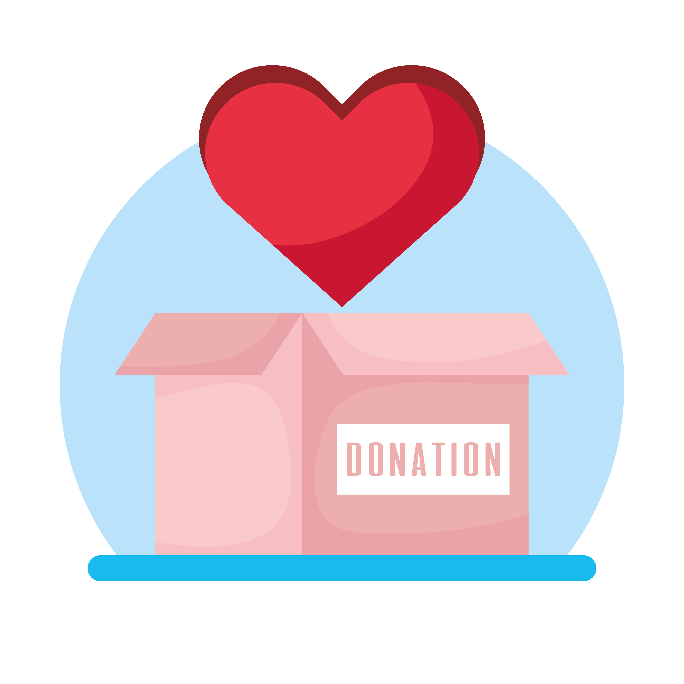

Consider making a one-time charitable donating to help fund cleanup programs in Virginia
Make a personal pledge to clean up litter when you see it, recycle when you can, and encourage other to do the same
Keep Virginia Beautiful is just one of the many organizations available that you can get involved with to help make a positive change against littering in Virginia. KVB has been helping to lead the fight against littering in Virginia since the 1950s, when they saw Virginia roadways becoming a dumping ground for trash and debris. Since then, KBV has been leading the charge against littering in Virginia by hosting events, educating the populace, petitioning the state government, and reaching out to local businesses to help get them involved. KVB has championed this long historical fight against littering into the modern era and continues offering many opportunities and events for residents to get involved (see side bars for details). Consider joining KVB’s long historical fight against littering in the commonwealth and make a change that will help positively impact both you and future generations.
Take time to notify Keep Virginia Beautiful about your efforts and results clearing local areas of litter
Sign-up for and attend local events to help raise money and support local efforts to clean up littering